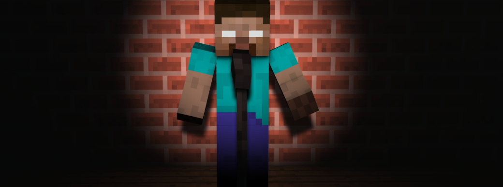

約束事

BowyersMCが運営する機関を利用する際の約束事を定めています。
必ず守るようにしてください。
ルール違反行為や、不快感を感じる場面を見かけたら、スタッフにご報告ください。
最終更新日：2023/04/18 9:30
コミュニケーション
・ すべての人に敬意をもって接しましょう。
・ スパム行為は禁止です。
・ 暴言や他人を罵るような発言は控えましょう。
Minecraft
・ Zephyrなどのハッククライアントは使わないでください。
・ X-Ray類の透過テクスチャは使わないでください。
・ チートやマクロの利用は禁止です。
ゲームプレイによるFOV変化の設定について、当サーバーでは基本的に「有効化」前提で作られています。
この設定に関しては、サーバー側で制御しづらい項目である為、無効化に対して黙認しています。
しかし、無効化することで移動速度低下のエフェクトを喰らった時に有効化しているプレイヤーと比べて、非常に有利になってしまいます。
当然ですが、その視点変化も込みでデバフを設定しているので明らかにその行為がグレーゾーンであることを忘れないでください。
Discord
当サーバーのDiscordでは、カテゴリーやチャンネルに沿った投稿や発言を心がけてください。
質問などは必ず「📮フォーラム」カテゴリでお願いします。
個人的な質問は、Discordのnnse#4313まで。